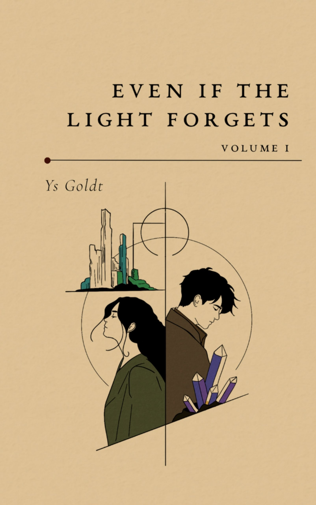

Forthcoming · 6 Nov 2026
One Small Proof
A quiet story about the strange ways a brief connection can outlast the people who made it.
creator of strange and tender things
Press & Media
For interviews, review copies, event invitations, permissions, or other media enquiries, please use the official contact form.
Books & Assets
Each title has its own information and available downloads. To request a review copy or an asset not listed here, use the press form below.
Forthcoming · 6 Nov 2026
A quiet story about the strange ways a brief connection can outlast the people who made it.

Published · Novella
A slow-burn historical romance about obsession, longing, and the cost of being seen.

Published · Novel
An adult fantasy romance of alchemy, ruin, found family, and fragile hope.

Published · Novel
An atmospheric historical novel in which a quiet devotion becomes something far more dangerous.

Published · Poetry
A collection about grief, longing, love, memory, and the moments that resist being named.
Conversation
Copy-ready
Ys Goldt is a multidisciplinary writer and artist working across fiction, interactive media, design, and performance. Her work explores attention, devotion, psychological transformation, memory, and the interior cost of being seen. She is the founding editor of Nachtljocht and lives in the Everglades, among things that may or may not exist.
Ys Goldt is a multidisciplinary writer and artist working across fiction, interactive media, design, and performance. The form changes, but the question remains: What is the truest form for an idea? And what can be removed until that form becomes unmistakable?
Her practice moves between the sentence, the image, the interface, and the object. Across these forms, she returns to attention, devotion, psychological transformation, memory, and the interior cost of being seen. She is the founding editor of Nachtljocht, a quarterly journal for fiction and short plays, whose editorial, visual, and material language she developed. Born and raised in the Everglades, Ys still lives there among things that may or may not exist.
Author Asset
For image permissions, captions, credit requirements, or an asset not listed here, please use the contact form below.
Enquiries
Use this form for interviews, review copies, events, permissions, and other media enquiries. Complimentary digital and physical review copies are available to reviewers, creators, and media upon request.
{kind=link}
{kind=link}